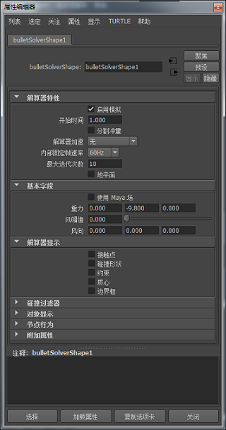

当您将 Bullet 对象添加到 Maya 场景时，就会创建一个
bulletSolverShape 节点。此节点的属性管理应用到整个场景的总体 Bullet Physics 设置，包括重力和风以及所用的解算器引擎（OpenCL CPU、OpenCLGPU）。
注： 您必须拥有支持 OpenCL 的显卡。
注： 选择解算器时，您在“属性编辑器”(Attribute Editor)中仅能查看“刚体集”(Rigid Sets)特性。
如果您在“基本场”(Basic Fields)部分中激活了“使用 Maya 场”(Use Maya Fields)选项，您也可以使用“Maya 场”(Maya Fields)来获得对解算器更多的控制。

解算器特性(Solver Properties)
-
启用模拟(Enable Simulation)
- 激活此选项可开始模拟处理并启用设置。
-
开始时间(Start Time)
- 设置 Bullet 模拟的开始时间（单位为帧）。通过将此属性的值设置为大于 1，可为场景在 Bullet 对象开始移动前的一定时间间隔设置动画。
-
分割冲量(Split Impulse)
- 启用该选项后，此选项会使任何已创建的速度无效，以便能在模拟的开始将穿透的对象分开。这有助于防止在放置到初始位置时，对象会猛烈地飞散。
-
解算器加速(Solver Acceleration)
- 通过在支持 OpenCL 的系统上使用 OpenCL，可使 Bullet 中的柔体解算器获得显著的加速。该选项可使 Bullet 充分利用并行计算资源，如多个 CPU 内核或图形处理单元 (GPU)。对于不支持 GPU 的系统，解算器仍然可以使用仅针对 CPU 的 OpenCL 解算器版本，利用多 CPU 内核的优势来获得显著的加速效果。
注： “解算器加速”(Solver Acceleration)仅作用于柔体，而不会作用于刚体。刚体计算由 CPU 完成。
-
内部固定帧速率(Internal Fixed Frame Rate)
- 设置 Bullet Physics 模拟的更新速率。此设置定义模拟的分辨率。如果因对象移动过快而不能产生碰撞，可通过增加“内部固定帧速率”(Internal Fixed Frame Rate)来减少时间步。有关详细信息，请参见位于 www.bulletphysics.org 的《Bullet Physics 手册》。
-
最大迭代次数(Max Num Iterations)
-
设置方程系统的最大迭代次数，超过指定的次数后解算器停止计算并使用最后的近似解算结果作为最终解算。因此，这可钳制一个模拟步的总时间。
注： 此方法的结果可能不如使用更明确的解算器时准确。但是，解算器的精确度已能满足大多数游戏和影片应用程序。
有关详细信息，请参见位于 www.bulletphysics.org 的《Bullet Physics 手册》。
-
地平面(Ground Plane)
- 启用“地平面”(Ground Plane)选项以将 Maya 视图平面设置为解算中对象碰撞对照的“底面”。
注： 当激活“地平面”(Ground Plane)选项后，您可以接受地平面默认属性：
- friction type="float" 0.500000
- restitution type="float" 0.990000
- inverseMass type="float" 0.000000
- linearDamping type="float" 0.010000
- angularDamping type="float" 0.010000
如果要更改这些设置，请创建一个多边形平面，方法是选择
“创建”(Create) >
“多边形基本体”(Polygon Primitives)>
“平面”(Plane)，并在
“属性编辑器”(Attribute Editor)中更改平面设置。
基本字段
-
使用 Maya 场(Use Maya Fields)
- 当您需要使用“Maya 场”(Maya Fields)来替代 Bullet“基本字段”(Basic Fields)时，请激活此选项。请参见 Bullet 和 Maya 场。
注： 激活“使用 Maya 场”(Use Maya Fields)将会禁用后面所述的 Bullet“重力”(Gravity)、“风幅值”(Wind Magnitude)和“风向”(Wind Direction)设置。但是，使用 Maya“场”(Field)设置时，请务必要记得：无法使用其他的哪个场都要设置重力设置。
-
重力(Gravity)
- 指定表示重力加速度的向量。 “重力”(Gravity)会影响场景中的所有动力学对象。
注： 默认的“重力”(Gravity)设置为 -9.8。
-
风幅值(Wind Magnitude)
- 指定场景中全局风力的强度。风只影响柔体。
注： 请将柔体对象的“空气动力学”(Aerodynamics)”的值设置为非零，否则风就不会影响该对象。
注： Bullet 的“风”(Wind)设置不作用于刚体。
-
风向(Wind Direction)
- 以向量（X、Y 和 Z）的形式指定风力的方向。
注： 请将柔体对象的“空气动力学”(Aerodynamics)”的值设置为非零，否则风就不会影响该对象。
注： Bullet 的“风”(Wind)设置不作用于刚体。
-
碰撞过滤器(Collision Filters)
- 当指定选择性碰撞时，定义刚体和柔体所用的碰撞过滤器名称。有关详细信息，请参见位于 www.bulletphysics.org 的《碰撞过滤 - Bullet Physics 手册》。
解算器显示(Solver Display)
“解算器显示”(Solver Display)设置涉及刚体集和粘合约束的显示。
-
边界框(Bounding Box)
- 为刚体集中的每个形状显示局部对齐的边界框。这有助于可视化隐藏几何体时模拟中刚体占用的体积，以便更快地显示。这在模拟的开始帧处非常有用，但在模拟运行期间用处不大，因为它与轴对齐。
注： 轴对齐到对象而不是场景的上方向轴。
-
质心(Center of Mass)
- 显示解算中对象的质心。“质心”(Center of Mass)节点通过更改颜色来指示其在解算中的状态（活动/非活动）。
- 深绿色：对象处于活动状态。
- 浅绿色：对象要进入睡眠状态。
- 白色：对象正在睡眠（非活动）。
- 红色：对象从不睡眠。
- 黄色：对象处于禁用状态。
注： 不能设置“质心”(Center of Mass)设置的动画。
注： 如果在某个轴上更改壳线以外的其他任何碰撞对象形状的“质心”(Center of Mass)属性，则将变换碰撞对象形状基本体。若要抵消此问题，请在“碰撞对象形状偏移”(Collider Shape Offset)属性中的“碰撞对象特性”(Collider Properties)（关闭“自动适配”(Auto Fit)时可以访问）下在相同轴上添加相反的偏移。
-
碰撞形状(Collision Shape)
-
如果隐藏对象，则可用于显示代理形状而非实际几何体，以加速解算器计算。碰撞形状的大小通过刚体集中每块几何体的边界定义。
碰撞形状在“初始状态节点”(Initial State Node)的“碰撞形状类型”(Collision Shape Type)中确定。
最好使对象的形状与受此形状影响的碰撞行为尽可能匹配。
注： 长方体和球体是最有效的碰撞形状，可提供更快的解算。
-
约束(Constraints)
- 显示刚性对象粘在一起所在的每个点。模拟解算完成后，这些点会立即消失。
-
接触点(Contact Points)
- 在片段接触并受力所在区域中显示黄点。您可以通过更改初始状态节点的“碰撞形状边界”(Collision Shape Margin)设置来影响此设置。
注： “接触点”(Contact Points)设置适用于所有刚体。